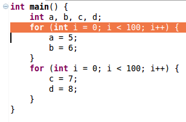
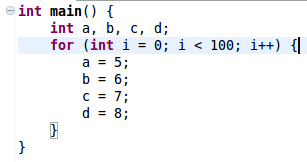

Fuse Loops
Use:
Fusion can be used to achieve better locality of reference, or to combine adjacent
loops for subsequent parallelization.
Description:
Combines two adjacent loops into one.
Example:
- Select the desired for loop to be changed and choose Fuse Loops under the Refactoring menu.

- The resulting loop.

Restrictions:
- The selected loop must have a for loop directly following it.
- The loop headers must be identical.
- Loops that have a pragma may not be fused unless both loops have identical pragmas.